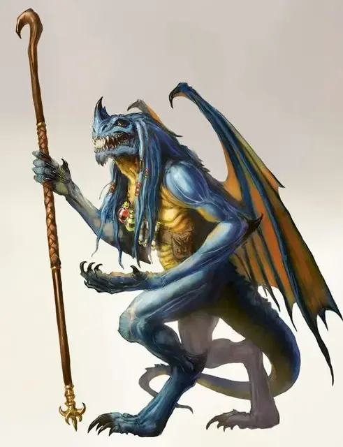

Синий абишай
Blue Abishai
Среднее Исчадие (Дьявол), законно-злое

Класс Доспеха 19 (природный доспех)
Хиты 195 (26к8 + 78)
Скорость 30 футов, летая 50 футов
| мод | спас | ||
|---|---|---|---|
| СИЛ | 15 | +2 | +2 |
| ЛОВ | 14 | +2 | +2 |
| ТЕЛ | 17 | +3 | +3 |
| мод | спас | ||
|---|---|---|---|
| ИНТ | 22 | +6 | +12 |
| МДР | 23 | +6 | +12 |
| ХАР | 18 | +4 | +4 |
Навыки Магия +12
Сопротивление урону холод; дробящий, колющий, рубящий от немагических атак, кроме нанесённых посеребрённым оружием
Иммунитет к урону огонь, электричество, яд
Иммунитет к состояниям отравление
Чувства тёмное зрение 120 футов, пассивное Восприятие 16
Языки Драконий, Инфернальный, Телепатия 120 фт.
Опасность 17 (18000 опыта)
Бонус мастерства +6
Среда обитания Город, Побережье
Особенности
Дьявольское зрение. Магическая тьма не мешает тёмному зрению абишая.
Сопротивление магии. Абишай совершает с преимуществом спасброски от заклинаний и прочих магических эффектов.
Магическое оружие. Атаки оружием абишая являются магическими.
Использование заклинаний. Абишай является заклинателем 13-го уровня. Его базовой характеристикой является Интеллект (Сл спасброска от заклинаний 20, +12 к атакам заклинаниями). У него подготовлены следующие заклинания волшебника:
• Заговоры (неограниченно): дружба [friends], волшебная рука [mage hand], сообщение [message], малая иллюзия [minor illusion], электрошок [shocking grasp]
• 1 уровень (4 ячейки): цветной шарик [chromatic orb], маскировка [disguise self], поспешное отступление [expeditious retreat], волшебная стрела [magic missile], очарование личности [charm person], волна грома [thunderwave]
• 2 уровень (3 ячейки): тьма [darkness], отражения [mirror image], туманный шаг [misty step]
• 3 уровень (3 ячейки): рассеивание магии [dispel magic], ужас [fear], молния [lightning bolt]
• 4 уровень (3 ячейки): переносящая дверь [dimension door], высшая невидимость [greater invisibility], град [ice storm]
• 5 уровень (2 ячейки): конус холода [cone of cold], силовая стена [wall of force]
• 6 уровень (1 ячейка): пляшущая молния [chain lightning]
• 7 уровень (1 ячейка): телепортация [teleport]
Действия
Мультиатака. Абишай совершает две атаки: одну железным молотом и одну укусом.
Боевой посох. Рукопашная атака оружием: +8 к попаданию, досягаемость 5 футов, одна цель. Попадание: 5 (1к6 + 2) дробящего урона, или 6 (1к8 + 2) дробящего урона при ударе двумя руками.
Укус. Рукопашная атака оружием: +8 к попаданию, досягаемость 5 футов, одна цель. Попадание: 13 (2к10 + 2) колющего урона плюс 14 (4к6) урона электричеством.
Описание
Каждый абишай когда-то был смертным, который каким-то образом завоевал милость Тиамат до своей смерти, и в качестве награды, его душа преобразовалась в отвратительного дьявола, чтобы служить ей в Девяти Преисподней.
Посланники погибели. Тиамат использует абишаев как агентов, отправляя их, чтобы представлять её интересы в Преисподней и по всей Мультивселенной. У некоторых простые задачи, такие как предоставление послания культистам или принятие на себя обязанностей, поклоняющихся выполнять чуждую миссию. Другие имеют более широкие обязанности, такие как ведение больших групп, убийство целей и участие в войсках. Во всех случаях абишаи фанатично лояльны к Тиамат, и при необходимости, готовы отдать свою жизнь.
Чужаки в Аду. Абишаи не входят в обычную иерархию Девяти Преисподней, имея свою собственную цепь командования, беспрекословно подчиняясь Тиамат (и Асмодею, когда тёмный лорд решает использовать их). Другие архидьяволы могут приказывать абишаям работать на них, но большинство из них редко делает это, так как никогда не ясно, выполняет ли абишай приказы Тиамат или Асмодея. Существует неотъемлемый риск того, что приказ, отданный Тиамат, может отмениться из-за вмешательства в планы Асмодея.
Синий Абишай. Искатели забытых знаний и потерянных реликвий, синие абишаи являются самыми хитрыми и узнаваемыми в своём роде. Их исследования в оккультных предметах, почерпнутых из томов и гримуаров, разграбленных со всей мультивселенной, позволяют им стать совершенными заклинателями. Они используют свою магию, чтобы опустошать врагов своей госпожи.